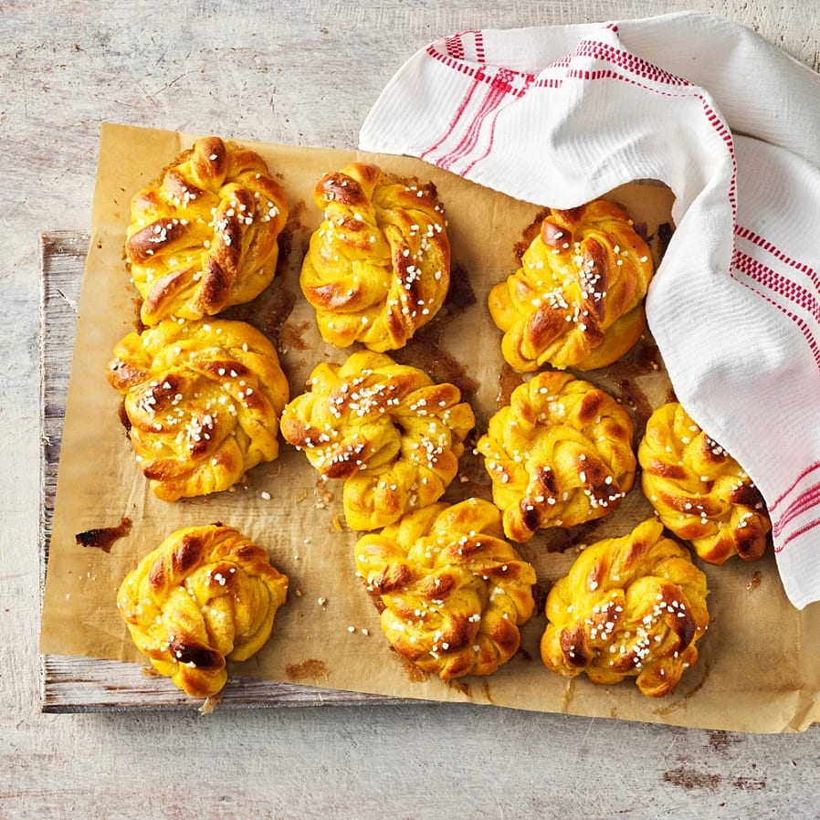

Saffransbullar med vanilj

Över 60 min

Ingredienser
- 50 g färsk jäst
- 150 g smör eller margarin
- 2 påsar saffran eller saffranspaste (à 1/2 g)
- 1 1/2 dl strösocker
- 5 dl mjölk
- 250 g kvarg (10 %)
- 1/2 tsk salt
- 1 ägg
- 17 dl vetemjöl (15-17 dl motsvarar 900-1020 g)
- 200 g rumstempererat smör eller margarin
- 1 1/2 dl strösocker
- 4 tsk vaniljsocker
Gör så här
- Smula ner jästen i en bunke.
- Smält matfettet i en kastrull.
- Stöt saffranet (ej pasten) med lite av sockret i en mortel. Rör ner saffranet i det smälta matfettet. Tillsätt mjölken och ljumma degspadet till ca 37°C.
- Rör ut jästen i lite av degspadet. Tillsätt resten av degspadet, socker, kvarg, salt och ägg. Arbeta i nästan allt vetemjöl och arbeta degen ca 5 minuter i maskin eller 10 minuter för hand. Strö lite mjöl över degen. Låt den jäsa under bakduk 30-45 minuter.
- Fyllning: Rör matfett, socker och vaniljsocker smidigt.
- Ta upp degen på mjölad arbetsbänk. Knåda ev. i resten av mjölet och dela degen i 2 delar (för 45 st).
- Kavla ut varje del på mjölad arbetsbänk till en kaka ca 25x60 cm. Bred på fyllningen. Vik kakan dubbel på längden, tryck till den lätt med handen. Skär 2-3 cm breda remsor, dela remsorna på mitten men låt dem sitta ihop i övre kanten (som ett byxben). Sno ihop till en knut. Lägg bullarna på plåtar med bakplåtspapper. Täck dem med en bakduk och låt jäsa ca 30 minuter.
- Sätt ugnen på 250°C.
- Pensling: Pensla bullarna med uppvispat ägg och strö på pärlsocker.
- Grädda bullarna mitt i ugnen ca 8 minuter. Låt dem kallna på galler övertäckta med bakduk.